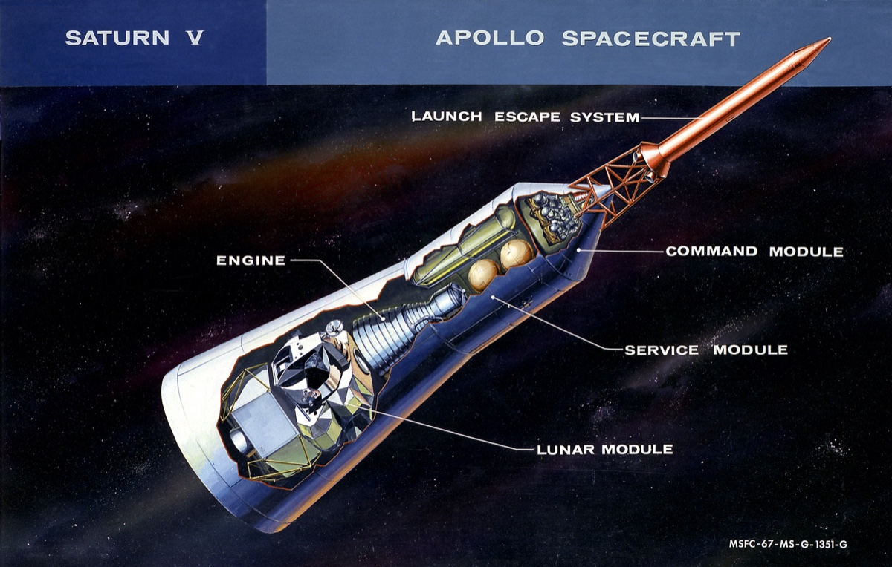

Spacecraft Configuration
Know Your Ship: Three Spacecraft in One
Before you fly a mission, you need to know your ship. The Apollo "spacecraft" was actually three separate vehicles stacked together: the Command Module, the Service Module, and the Lunar Module. Each one had its own job. Take the tour — some of these details will matter more than you think.

The Three Modules
🔺 Command Module "Odyssey" — Crew Cabin & Re-Entry Capsule
The cone-shaped cabin where all three astronauts live for most of the trip — about as much room inside as a large walk-in closet. It's the only part of the ship with a heat shield, which means it's the only part that can come home through Earth's atmosphere.
Key Features:
- Ablative heat shield (burns away during re-entry to carry heat off)
- Three 83-foot parachutes for splashdown
- Navigation and guidance systems
- Small re-entry batteries — backup power for the final hours only
⚙️ Service Module — Power & Propulsion Workhorse
If the Command Module is the crew's apartment, the Service Module is the power plant, water works, oxygen supply, and main engine — all bolted on behind it in one big cylinder.
What It Carries:
- 3 Fuel Cells: Combine oxygen + hydrogen to make electricity — with drinking water as a bonus byproduct
- 2 Oxygen Tanks: Super-cold liquid oxygen at -297°F, feeding both the fuel cells and the air the crew breathes
- Main Engine (SPS): 20,500 pounds of thrust for big course changes
- High-Gain Antenna: The main radio link to Earth
🛸 Lunar Module "Aquarius" — The Moon Lander
The spider-legged lander riding along below the other two modules. Its whole job: carry two astronauts down to the Moon's surface and back up again — a design life of about 45 hours for a crew of two. The cabin is even smaller than the Command Module's, with standing room only. No seats.
A Complete Spacecraft of Its Own:
- Its own oxygen supply
- Its own batteries (completely separate from the CM and SM)
- Its own engines — including a throttleable descent engine
- Its own life support and water tanks
🔗 How They Connect — The Docking System
After Launch:
- CM/SM separate from the Saturn V's third stage
- CM/SM turn around 180°
- CM docks with the LM nose-to-nose
- LM is pulled free of its adapter
- The combined spacecraft flies on to the Moon
Docking Tunnel: A 32-inch-wide tunnel connects the Command Module to the Lunar Module. Whenever both cabins are pressurized, crew members can float through it from one spacecraft to the other.
Why Three Modules?
Specialization
Each module is built for exactly one job: CM for carrying the crew home, SM for power and propulsion, LM for landing on the Moon.
Weight Savings
Don't haul landing legs back to Earth. Don't drag the heavy Service Module through the atmosphere. Shed what you no longer need at each stage.
Independence
The LM has to survive on its own far from the mothership, so the stack really carries two complete, self-sufficient spacecraft — each with its own power, oxygen, and engines.
Three modules. Three jobs. One ship.
Tour complete — now back to the mission.
🔺 CM + ⚙️ SM + 🛸 LM = 🚀 One Moon Ship